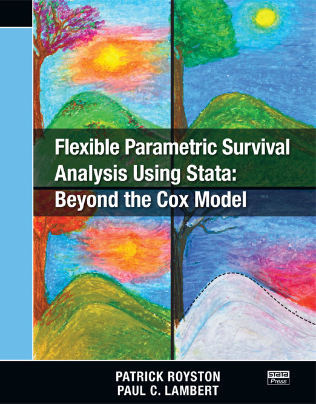

Publications
Flexible parametric survival models using Stata: Beyond the Cox Model
I have written a book with Patrick Royston titled Flexible parametric survival models using Stata: Beyond the Cox model.

You can download the datasets and code used in the book.
A review of the book can be found here.
We are writing a second edition of the book with Mark Rutherford included as an additional author.
My publications
Johansson ALV, Kønig SM, Larønningen S, Engholm G, Kroman N, Seppä K, Malila N, Steig BÁ, Gudmundsdóttir EM, Ólafsdóttir EJ, Lundberg FE, Andersson TM-L, Lambert PC, Lambe M, Pettersson D, Aagnes B, Friis S, Storm H. Have the recent advancements in cancer therapy and survival benefitted patients of all age groups across the Nordic countries? NORDCAN survival analyses 2002-2021. Acta Oncologica 2024;63:179–91. https://doi.org/10.2340/1651-226X.2024.35094.
Lundberg FE, Birgisson H, Engholm G, Ólafsdóttir EJ, Mørch LS, Johannesen TB, Pettersson D, Lambe M, Seppä K, Lambert PC, Johansson ALV, Hölmich LR, Andersson TM-L. Survival trends for patients diagnosed with cutaneous malignant melanoma in the Nordic countries 1990-2016: The NORDCAN survival studies. European Journal of Cancer 2024;202:113980. https://doi.org/10.1016/j.ejca.2024.113980.
Hall M, Smith L, Wu J, Hayward C, Batty JA, Lambert PC, Hemingway H, Gale CP. Health outcomes after myocardial infarction: A population study of 56 million people in England. PLoS Medicine 2024;21:e1004343. https://doi.org/10.1371/journal.pmed.1004343.
Lee S, Lambert PC, Sweeting MJ, Latimer NR, Rutherford MJ. Evaluation of flexible parametric relative survival approaches for enforcing long-term constraints when extrapolating all-cause survival. Value in Health 2024;27:51–60. https://doi.org/10.1016/j.jval.2023.10.003.
Jennings AC, Rutherford MJ, Latimer NR, Sweeting MJ, Lambert PC. Perils of randomized controlled trial survival extrapolation assuming treatment effect waning: Why the distinction between marginal and conditional estimates matters. Value in Health 2023. https://doi.org/10.1016/j.jval.2023.12.008.
Leontyeva Y, Lambe M, Bower H, Lambert PC, Andersson TM-L. Including uncertainty of the expected mortality rates in the prediction of loss in life expectancy. BMC Medical Research Methodology 2023;23:291. https://doi.org/10.1186/s12874-023-02118-w.
Waterhouse JV, Welch CA, Battisti NML, Sweeting MJ, Paley L, Lambert PC, Deanfield J, Belder M de, Peake MD, Adlam D, Ring A. Geographical variation in underlying social deprivation, cardiovascular and other comorbidities in patients with potentially curable cancers in England: Results from a national registry dataset analysis. Clinical Oncology 2023;35:e709–19. https://doi.org/10.1016/j.clon.2023.08.009.
Booth S, Mozumder SI, Archer L, Ensor J, Riley RD, Lambert PC, Rutherford MJ. Using temporal recalibration to improve the calibration of risk prediction models in competing risk settings when there are trends in survival over time. Statistics in Medicine 2023;30:5007–24. https://doi.org/10.1002/sim.9898.
Tyrer F, Chudasama YV, Lambert PC, Rutherford MJ. Flexible parametric methods for calculating life expectancy in small populations. Population Health Metrics 2023;21:13. https://doi.org/10.1186/s12963-023-00313-x.
Wells M, Rutherford MJ, Lambert PC. Fair comparisons of cause-specific and relative survival by accounting for the systematic removal of patients from risk-sets. Cancer Epidemiology 2023;86:102408. https://doi.org/10.1016/j.canep.2023.102408.
Sweeting MJ, Rutherford MJ, Jackson D, Lee S, Latimer NR, Hettle R, Lambert PC. Survival extrapolation incorporating general population mortality using excess hazard and cure models: A tutorial. Medical Decision Making 2023;43:737–48. https://doi.org/10.1177/0272989X231184247.
Myklebust TÅa, Aagnes B, Nilssen Y, Rutherford M, Lambert PC, Andersson TML, Johansson ALV, Dickman PW, Møller B. Improving communication of cancer survival statistics-feasibility of implementing model-based algorithms in routine publications. British Journal of Cancer 2023;129:819–28. https://doi.org/10.1038/s41416-023-02360-5.
Teece L, Sweeting MJ, Hall M, Coles B, Oliver-Williams C, Welch CA, Belder MA de, Deanfield J, Weston C, Rutherford MJ, Paley L, Kadam UT, Lambert PC, Peake MD, Gale CP, Adlam D, VICORI Collaborative. Impact of a prior cancer diagnosis on quality of care and survival following acute myocardial infarction: Retrospective population-based cohort study in England. Circulation Cardiovascular Quality and Outcomes 2023;16:e009236. https://doi.org/10.1161/CIRCOUTCOMES.122.009236.
Skourlis N, Crowther MJ, Andersson TM-L, Lu D, Lambe M, Lambert PC. Exploring different research questions via complex multi-state models when using registry-based repeated prescriptions of antidepressants in women with breast cancer and a matched population comparison group. BMC Medical Research Methodology 2023;23:87. https://doi.org/10.1186/s12874-023-01905-9.
Coles B, Welch CA, Motiwale RS, Teece L, Oliver-Williams C, Weston C, Belder MA de, Lambert PC, Rutherford MJ, Paley L, Kadam UT, Lawson CA, Deanfield J, Peake MD, McDonagh T, Sweeting MJ, Adlam D, VICORI Collaborative. Acute heart failure presentation, management, and outcomes in cancer patients: A national longitudinal study. European Heart Journal Acute Cardiovascular Care 2023;12:315–27. https://doi.org/10.1093/ehjacc/zuad020.
Lundberg FE, Kroman N, Lambe M, Andersson TM-L, Engholm G, Johannesen TB, Virtanen A, Pettersson D, Ólafsdóttir EJ, Birgisson H, Lambert PC, Mørch LS, Johansson ALV. Age-specific survival trends and life-years lost in women with breast cancer 1990-2016: The NORDCAN survival studies. Acta Oncologica 2022;61:1481–9. https://doi.org/10.1080/0284186X.2022.2156811.
Batyrbekova N, Bower H, Dickman PW, Ravn Landtblom A, Hultcrantz M, Szulkin R, Lambert PC, Andersson TM-L. Modelling multiple time-scales with flexible parametric survival models. BMC Medical Research Methodology 2022;22:290. https://doi.org/10.1186/s12874-022-01773-9.
Syriopoulou E, Wästerlid T, Lambert PC, Andersson TM-L. Standardised survival probabilities: A useful and informative tool for reporting regression models for survival data. British Journal of Cancer 2022;127:1808–15. https://doi.org/10.1038/s41416-022-01949-6.
Leontyeva Y, Bower H, Gauffin O, Lambert PC, Andersson TM-L. Assessing the impact of including variation in general population mortality on standard errors of relative survival and loss in life expectancy. BMC Medical Research Methodology 2022;22:130. https://doi.org/10.1186/s12874-022-01597-7.
Syriopoulou E, Mozumder SI, Rutherford MJ, Lambert PC. Estimating causal effects in the presence of competing events using regression standardisation with the stata command standsurv. BMC Medical Research Methodology 2022;22:226. https://doi.org/10.1186/s12874-022-01666-x.
Schmidt JCF, Lambert PC, Gillies CL, Sweeting MJ. Patterns of rates of mortality in the Clinical Practice Research Datalink. PloS One 2022;17:e0265709. https://doi.org/10.1371/journal.pone.0265709.
Lundberg FE, Birgisson H, Johannesen TB, Engholm G, Virtanen A, Pettersson D, Ólafsdóttir EJ, Lambe M, Lambert PC, Mørch LS, Johansson ALV, Andersson TM-L. Survival trends in patients diagnosed with colon and rectal cancer in the Nordic countries 1990-2016: The NORDCAN survival studies. European Journal of Cancer 2022;172:76–84. https://doi.org/10.1016/j.ejca.2022.05.032.
Bower H, Andersson TM-L, Crowther MJ, Lambert PC. Flexible parametric survival analysis with multiple timescales: Estimation and implementation using stmt. The Stata Journal 2022;22:679–701. https://doi.org/10.1177/1536867x221124552.
Smith A, Lambert PC, Rutherford MJ. Generating high-fidelity synthetic time-to-event datasets to improve data transparency and accessibility. BMC Medical Research Methodology 2022;22:176. https://doi.org/10.1186/s12874-022-01654-1.
Stannard R, Lambert PC, Andersson TM-L, Rutherford MJ. Obtaining long-term stage-specific relative survival estimates in the presence of incomplete historical stage information. British Journal of Cancer 2022;127:1061–8. https://doi.org/10.1038/s41416-022-01866-8.
Skourlis N, Crowther MJ, Andersson TM-L, Lambert PC. On the choice of timescale for other cause mortality in a competing risk setting using flexible parametric survival models. Biometrical Journal 2022;64:1161–77. https://doi.org/10.1002/bimj.202100254.
Andersson TM-L, Rutherford MJ, Møller B, Lambert PC, Myklebust TÅ. Reference-adjusted loss in life expectancy for population-based cancer patient survival comparisons-with an application to colon cancer in Sweden. Cancer Epidemiology, Biomarkers & Prevention 2022;31:1720–6. https://doi.org/10.1158/1055-9965.EPI-22-0137.
Andersson TM-L, Myklebust TÅ, Rutherford MJ, Møller B, Arnold M, Soerjomataram I, Bray F, Parkin DM, Lambert PC. Five ways to improve international comparisons of cancer survival: Lessons learned from ICBP SURVMARK-2. British Journal of Cancer 2022;126:1224–8. https://doi.org/10.1038/s41416-022-01701-0.
Rutherford MJ, Andersson TM-L, Myklebust TÅ, Møller B, Lambert PC. Non-parametric estimation of reference adjusted, standardised probabilities of all-cause death and death due to cancer for population group comparisons. BMC Medical Research Methodology 2022;22:2. https://doi.org/10.1186/s12874-021-01465-w.
Andersson TM-L, Rutherford MJ, Myklebust TÅ, Møller B, Arnold M, Soerjomataram I, Bray F, Elkader HA, Engholm G, Huws D, Little A, Shack L, Walsh PM, Woods RR, Parkin DM, Lambert PC. A way to explore the existence of “immortals” in cancer registry data - an illustration using data from ICBP SURVMARK-2. Cancer Epidemiology 2022;76:102085. https://doi.org/10.1016/j.canep.2021.102085.
Lee SF, Vellayappan BA, Wong LC, Chiang CL, Chan SK, Wan EY-F, Wong IC-K, Lambert PC, Rachet B, Ng AK, Luque-Fernandez MA. Cardiovascular diseases among diffuse large b-cell lymphoma long-term survivors in asia: A multistate model study. ESMO Open 2022;7:100363. https://doi.org/10.1016/j.esmoop.2021.100363.
Riley RD, Collins GS, Ensor J, Archer L, Booth S, Mozumder SI, Rutherford MJ, Smeden M van, Lambert PC, Snell KIE. Minimum sample size calculations for external validation of a clinical prediction model with a time-to-event outcome. Statistics in Medicine 2021;41:1280–95. https://doi.org/10.1002/sim.9275.
Skourlis N, Crowther MJ, Andersson TM-L, Lambert PC. Development of a dynamic interactive web tool to enhance understanding of multi-state model analyses: MSMplus. BMC Medical Research Methodology 2021;21:262. https://doi.org/10.1186/s12874-021-01420-9.
Syriopoulou E, Rutherford MJ, Lambert PC. Inverse probability weighting and doubly robust standardization in the relative survival framework. Statistics in Medicine 2021;40:6069–92. https://doi.org/10.1002/sim.9171.
Sweeting MJ, Oliver-Williams C, Teece L, Welch CA, Belder MA de, Coles B, Lambert PC, Paley L, Rutherford MJ, Elliss-Brookes L, Deanfield J, Peake MD, Adlam D. Data resource profile: The Virtual Cardio-Oncology Research Initiative (VICORI) linking national English cancer registration and cardiovascular audits. International Journal of Epidemiology 2022;50:1768–79. https://doi.org/10.1093/ije/dyab082.
Coles B, Teece L, Weston C, Belder MA de, Oliver-Williams C, Welch CA, Rutherford MJ, Lambert PC, Bidulka P, Paley L, Nitsch D, Deanfield J, Peake MD, Adlam D, Sweeting MJ, collaborative V. Case-ascertainment of acute myocardial infarction hospitalisations in cancer patients: A cohort study using English linked electronic health data. European Heart Journal Quality of Care & Clinical Outcomes 2021;8:86–95. https://doi.org/10.1093/ehjqcco/qcab045.
Lambert PC, Syriopoulou E, Rutherford MJ. Direct modelling of age standardized marginal relative survival through incorporation of time-dependent weights. BMC Medical Research Methodology 2021;21:84. https://doi.org/10.1186/s12874-021-01266-1.
Mozumder SI, Rutherford MJ, Lambert PC. Estimating restricted mean survival time and expected life-years lost in the presence of competing risks within flexible parametric survival models. BMC Medical Research Methodology 2021;21:52. https://doi.org/10.1186/s12874-021-01213-0.
Ensor J, Snell KIE, Debray TPA, Lambert PC, Look MP, Mamas MA, Moons KGM, Riley RD. Individual participant data meta-analysis for external validation, recalibration, and updating of a flexible parametric prognostic model. Statistics in Medicine 2021;40:3066–84. https://doi.org/10.1002/sim.8959.
Hill M, Lambert PC, Crowther MJ. Relaxing the assumption of constant transition rates in a multi-state model in hospital epidemiology. BMC Medical Research Methodology 2021;21:16. https://doi.org/10.1186/s12874-020-01192-8.
Weibull CE, Lambert PC, Eloranta S, Andersson TM-L, Dickman PW, Crowther MJ. A multistate model incorporating estimation of excess hazards and multiple time scales. Statistics in Medicine 2021;40:2139–54. https://doi.org/10.1002/sim.8894.
Andersson TM-L, Rutherford MJ, Myklebust TÅ, Møller B, Soerjomataram I, Arnold M, Bray F, Parkin DM, Sasieni P, Bucher O, De P, Engholm G, Gavin A, Little A, Porter G, Ramanakumar AV, Saint-Jacques N, Walsh PM, Woods RR, Lambert PC. Exploring the impact of cancer registry completeness on international cancer survival differences: A simulation study. British Journal of Cancer 2021;124:1026–32. https://doi.org/10.1038/s41416-020-01196-7.
Rutherford MJ, Lambert PC, Sweeting MJ, Pennington B, Crowther MJ, Abrams KR, Latime NR. NICE DSU TECHNICAL SUPPORT DOCUMENT 21: Flexible methods for survival analysis. Decision Support Unit, University of Sheffield 2021.
Andersson TM-L, Myklebust TÅ, Rutherford MJ, Møller B, Soerjomataram I, Arnold M, Bray F, Parkin DM, Sasieni P, Bucher O, De P, Engholm G, Gavin A, Little A, Porter G, Ramanakumar AV, Saint-Jacques N, Walsh PM, Woods RR, Lambert PC. The impact of excluding or including Death Certificate Initiated (DCI) cases on estimated cancer survival: A simulation study. Cancer Epidemiology 2021;71:101881. https://doi.org/10.1016/j.canep.2020.101881.
Syriopoulou E, Rutherford MJ, Lambert PC. Understanding disparities in cancer prognosis: An extension of mediation analysis to the relative survival framework. Biometrical Journal 2021;63:341–53. https://doi.org/10.1002/bimj.201900355.
Smith AJ, Lambert PC, Rutherford MJ. Understanding the impact of sex and stage differences on melanoma cancer patient survival: A SEER-based study. British Journal of Cancer 2021;1124:671–7. https://doi.org/10.1038/s41416-020-01144-5.
Lundberg FE, Andersson TM-L, Lambe M, Engholm G, Mørch LS, Johannesen TB, Virtanen A, Pettersson D, Olafsdottir EJ, Birgisson H, Johansson ALV, Lambert PC. Trends in cancer survival in the Nordic countries 1990-2016: The NORDCAN survival studies. Acta Oncologica 2020;59:1266–74. https://doi.org/10.1080/0284186X.2020.1822544.
Lambert PC, Andersson TM-L, Rutherford MJ, Myklebust TÅ, Møller B. Reference-adjusted and standardized all-cause and crude probabilities as an alternative to net survival in population-based cancer studies. International Journal of Epidemiology 2020;49:1614–23. https://doi.org/10.1093/ije/dyaa112.
Myklebust TÅ, Andersson TM-L, Bardot A, Vernon S, Gavin A, Fitzpatrick D, Jerm MB, Rutherford MJ, Parkin DM, Sasieni P, Arnold M, Soerjomataram I, Bray F, Lambert PC, Møller B. Can different definitions of date of cancer incidence explain observed international variation in cancer survival? An ICBP SURVMARK-2 study. Cancer Epidemiology 2020;67:101759. https://doi.org/10.1016/j.canep.2020.101759.
Rutherford MJ, Dickman PW, Coviello E, Lambert PC. Estimation of age-standardized net survival, even when age-specific data are sparse. Cancer Epidemiology 2020;67:101745. https://doi.org/10.1016/j.canep.2020.101745.
Welch CA, Sweeting MJ, Lambert PC, Rutherford MJ, Jack RH, West D, Adlam D, Peake M. Impact on survival of modelling increased surgical resection rates in patients with non-small-cell lung cancer and cardiovascular comorbidities: A VICORI study. British Journal of Cancer 2020;123:471–9. https://doi.org/10.1038/s41416-020-0869-8.
Booth S, Riley RD, Ensor J, Lambert PC, Rutherford MJ. Temporal recalibration for improving prognostic model development and risk predictions in settings where survival is improving over time. International Journal of Epidemiology 2020;49:1316–25. https://doi.org/10.1093/ije/dyaa030.
Syriopoulou E, Rutherford MJ, Lambert PC. Marginal measures and causal effects using the relative survival framework. International Journal of Epidemiology 2020;49:619–28. https://doi.org/10.1093/ije/dyz268.
Arnold M, Rutherford MJ, Bardot A, Ferlay J, Andersson TM, Myklebust TÅ, Tervonen H, Thursfield V, Ransom D, Shack L, Woods RR, Turner D, Leonfellner S, Ryan S, Saint-Jacques N, De P, McClure C, Ramanakumar AV, Stuart-Panko H, Engholm G, Walsh PM, Jackson C, Vernon S, Morgan E, Gavin A, Morrison DS, Huws DW, Porter G, Butler J, Bryant H, Currow DC, Hiom S, Parkin DM, Sasieni P, Lambert PC, Möller B, Soerjomataram I, Bray F. Progress in cancer survival, mortality, and incidence in seven high-income countries 1995-2014 (ICBP SURVMARK-2): A population-based study. Lancet Oncology 2019;20:1493–505.
Wong KF, Lambert PC, Mozumder SI, Broggio J, Rutherford MJ. Conditional crude probabilities of death for English cancer patients. British Journal of Cancer 2019;121:883–9. https://doi.org/10.1038/s41416-019-0597-0.
Andersson TM-L, Rutherford MJ, Lambert PC. Illustration of different modelling assumptions for estimation of loss in expectation of life due to cancer. BMC Medical Research Methodology 2019;19:19. https://doi.org/https://doi.org/10.1186/s12874-019-0785-x.
Bower H, Crowther MJ, Rutherford MJ, Andersson TML, Clements M, Liu XR, Dickman PW, Lambert PC. Capturing simple and complex time-dependent effects using flexible parametric survival models: Communications in Statistics - Simulation and Computation 2019. https://doi.org/https://doi.org/10.1080/03610918.2019.1634201.
Syriopoulou E, Morris E, P. F, Lambert PC, Rutherford MJ. Understanding the impact of socioeconomic differences in colorectal cancer survival: Potential gain in life-years. British Journal of Cancer 2019;120:1052–8. https://doi.org/10.1038/s41416-019-0455-0.
Rutherford MJ, Andersson TM-L, Björkholm M, Lambert PC. Loss in life expectancy and gain in life years as measures of cancer impact. Cancer Epidemiology 2019;60:168–73. https://doi.org/10.1016/j.canep.2019.04.005.
Bower H, Andersson TM-L, Syriopoulou E, Rutherford MJ, Lambe M, Ahlgren J, Dickman PW, Lambert PC. Potential gain in life years for Swedish women with breast cancer if stage and survival differences between education groups could be eliminated - three what-if scenarios. Breast 2019;45:75–81. https://doi.org/10.1016/j.breast.2019.03.005.
Weibull CE, Björkholm M, Glimelius I, Lambert PC, Andersson TM-L, Smedby KE, Dickman PW, Eloranta S. Temporal trends in treatment-related incidence of diseases of the circulatory system among Hodgkin lymphoma patients. International Journal of Cancer 2019;145:1200–8. https://doi.org/10.1002/ijc.32142.
Syriopoulou E, Mozumder SI, Rutherford MJ, Lambert PC. Robustness of individual and marginal model-based estimates: A sensitivity analysis of flexible parametric models. Cancer Epidemiology 2018;58:17–24. https://doi.org/10.1016/j.canep.2018.10.017.
Plym A, Bower H, Fredriksson I, Holmberg L, Lambert PC, Lambe M. Loss in working years after a breast cancer diagnosis. British Journal of Cancer 2018;118:738–43. https://doi.org/10.1038/bjc.2017.456.
Mozumder SI, Dickman PW, Rutherford MJ, Lambert PC. InterPreT cancer survival: A dynamic web interactive prediction cancer survival tool for health-care professionals and cancer epidemiologists. Cancer Epidemiology 2018;56:46–52. https://doi.org/10.1016/j.canep.2018.07.009.
Weibull CE, Johansson ALV, Eloranta S, Smedby KaE, Björkholm M, Lambert PC, Dickman PW, Glimelius I. Contemporarily treated patients with Hodgkin lymphoma have childbearing potential in line with matched comparators. Journal of Clinical Oncology 2018;36:2718–25. https://doi.org/10.1200/JCO.2018.78.3514.
Latimer NR, Abrams KR, Lambert PC, Morden JP, Crowther MJ. Assessing methods for dealing with treatment switching in clinical trials: A follow-up simulation study. Statistical Methods in Medical Research 2018;27:765–84. https://doi.org/10.1177/0962280216642264.
Mozumder SI, Rutherford MJ, Lambert PC. A flexible parametric competing-risks model using a direct likelihood approach for the cause-specific cumulative incidence function. The Stata Journal 2017;17:462–89. https://doi.org/10.1177/1536867x1701700212.
Mozumder SI, Lambert PC, Rutherford MJ. Direct likelihood inference on the cause-specific cumulative incidence function: A flexible parametric regression modelling approach. Statistics in Medicine 2018;37:82–97. https://doi.org/10.1002/sim.7498.
Bower H, Andersson TM-L, Crowther MJ, Dickman PW, Lambe M, Lambert PC. Adjusting expected mortality rates using information from a control population: An example using socioeconomic status. American Journal of Epidemiology 2018;187:828–36. https://doi.org/10.1093/aje/kwx303.
Latimer NR, Abrams KR, Lambert PC, Crowther MJ, Wailoo AJ, Morden JP, Akehurst RL, Campbell MJ. Adjusting for treatment switching in randomised controlled trials - a simulation study and a simplified two-stage method. Statistical Methods in Medical Research 2017;26:724–51. https://doi.org/10.1177/0962280214557578.
Peters TL, Weibull CE, Fang F, Sandler DP, Lambert PC, Ye W, Kamel F. Association of fractures with the incidence of amyotrophic lateral sclerosis. Amyotrophic Lateral Sclerosis & Frontotemporal Degeneration 2017;18:419–25. https://doi.org/10.1080/21678421.2017.1300287.
Crowther MJ, Lambert PC. Parametric multi-state survival models: Flexible modelling allowing transition-specific distributions with application to estimating clinically useful measures of effect differences. Statistics in Medicine 2017;36:4719–42. https://doi.org/10.1002/sim.7448.
Cramb SM, Mengersen KL, Lambert PC, Ryan LM, Baade PD. A flexible parametric approach to examining spatial variation in relative survival. Statistics in Medicine 2016;35:5448–63. https://doi.org/10.1002/sim.7071.
Lambert PC. The estimation and modelling of cause-specific cumulative incidence functions using time-dependent weights. The Stata Journal 2017;17:181–207.
Lambert PC, Wilkes SR, Crowther MJ. Flexible parametric modelling of the cause-specific cumulative incidence function. Statistics in Medicine 2017;36:1429–46. https://doi.org/10.1002/sim.7208.
Syriopoulou E, Bower H, Andersson TM-L, Lambert PC, Rutherford MJ. Estimating the impact of a cancer diagnosis on life expectancy by socio-economic group for a range of cancer types in England. British Journal of Cancer 2017;117:1419–26. https://doi.org/10.1038/bjc.2017.300.
Bower H, Andersson TML, Bjorkholm M, Dickman PW, Lambert PC, Derolf AR. Continued improvement in survival of acute myeloid leukemia patients: An application of the loss in expectation of life. Blood Cancer Journal 2016;6:e390. https://doi.org/10.1038/bcj.2016.3.
Bower H, Björkholm M, Dickman PW, Höglund M, Lambert PC, Andersson TM-L. Life expectancy of chronic myeloid leukemia patients is approaching the life expectancy of the general population. Journal of Clinical Oncology 2016;34:2851–7. https://doi.org/10.1200/JCO.2015.66.2866.
Bower H, Crowther MJ, Lambert PC. strcs: A command for fitting flexible parametric survival models on the log-hazard scale. The Stata Journal 2016;16:989–1012. https://doi.org/10.1177/1536867X1601600410.
Edgren G, Hjalgrim H, Rostgaard K, Lambert PC, Wikman A, Norda R, Titlestad K-E, Erikstrup C, Ullum H, Melbye M, Busch MP, Nyrón O. Transmission of neurodegenerative disorders through blood transfusion: A cohort study. Annals of Internal Medicine 2016;165:316–24. https://doi.org/10.7326/M15-2421.
Crowther MJ, Andersson TM-L, Lambert PC, Abrams KR, Humphreys K. Joint modelling of longitudinal and survival data: Incorporating delayed entry and an assessment of model misspecification. Statistics in Medicine 2016;35:1193–209. https://doi.org/10.1002/sim.6779.
Andersson TM-L, Dickman PW, Eloranta S, Sjövall A, Lambe M, Lambert PC. The loss in expectation of life after colon cancer: A population-based study. BMC Cancer 2015;15:412. https://doi.org/10.1186/s12885-015-1427-2.
Hultcrantz M, Wilkes SR, Kristensson SY, Andersson TM-L, Derolf A, Eloranta S, O. OL, Lambert PC, Björkholm M. Risk and cause of death in 9,285 patients diagnosed with myeloproliferative neoplasms in Sweden between 1973 and 2005. A population-based study. Journal of Clinical Oncology 2015;33:2288–95. https://doi.org/10.1200/JCO.2014.57.6652.
Rutherford MJ, Abel GA, Greenberg DC, Lambert PC, Lyratzopoulos G. The impact of eliminating age inequalities in stage at diagnosis on breast cancer survival for older women. British Journal of Cancer 2015;112:S124–8. https://doi.org/10.1038/bjc.2015.51.
Rutherford MJ, Ironmonger L, Ormiston-Smith N, Abel GA, Greenberg DC, Lyratzopoulos G, Lambert PC. Estimating the potential survival gains by eliminating socioeconomic and sex inequalities in stage at diagnosis of melanoma. British Journal of Cancer 2015;112 Suppl:S116–23. https://doi.org/10.1038/bjc.2015.50.
Crowther MJ, Lambert PC. Reply to letter to the Editor by Remontet et al. Statistics in Medicine 2015;34:3378–80. https://doi.org/10.1002/sim.6606.
Lambert PC, Dickman PW, Rutherford MJ. Comparison of approaches to estimating age-standardized net survival. BMC Med Res Methodol 2015;15:64. https://doi.org/10.1186/s12874-015-0057-3.
Rutherford MJ, Andersson TM-L, Møller H, Lambert PC. Understanding the impact of socioeconomic differences in breast cancer survival in England and Wales: Avoidable deaths and potential gain in expectation of life. Cancer Epidemiology 2015;39:118–25. https://doi.org/10.1016/j.canep.2014.11.002.
Rutherford MJ, Crowther MJ, Lambert PC. The use of restricted cubic splines to approximate complex hazard functions in the analysis of time-to-event data: A simulation study. Journal of Statistical Computation and Simulation 2015;85:777–93. https://doi.org/10.1080/00949655.2013.845890.
Crowther MJ, Lambert PC. A general framework for parametric survival analysis. Statistics in Medicine 2014;33:5280–97. https://doi.org/10.1002/sim.6300.
Eloranta S, Lambert PC, Andersson TM-L, Björkholm M, Dickman PW. The application of cure models in the presence of competing risks: A tool for improved risk communication in population-based cancer patient survival. Epidemiology 2014;25:742–8. https://doi.org/10.1097/EDE.0000000000000130.
Feldman AL, Johansson ALV, Lambert PC, Sieurin J, Yang F, Pedersen NL, Wirdefeldt K. Familial coaggregation of alzheimer’s disease and parkinson’s disease: Systematic review and meta-analysis. Neuroepidemiology 2014;42:69–80. https://doi.org/10.1159/000355452.
Gao H, Hägg S, Sjögren P, Lambert PC, Ingelsson E, Dam RM van. Serum selenium in relation to measures of glucose metabolism and incidence of type 2 diabetes in an older swedish population. Diabetic Medicine : A Journal of the British Diabetic Association 2014;31:787–93. https://doi.org/10.1111/dme.12429.
Latimer NR, Abrams KR, Lambert PC, Crowther MJ, Wailoo AJ, Morden JP, Akehurst RL, Campbell MJ. Adjusting survival time estimates to account for treatment switching in randomized controlled trials–an economic evaluation context: Methods, limitations, and recommendations. Medical Decision Making 2014;34:387–402. https://doi.org/10.1177/0272989X13520192.
Andersson TM-L, Eriksson H, Hansson J, Månsson-Brahme E, Dickman PW, Eloranta S, Lambe M, Lambert PC. Estimating the cure proportion of malignant melanoma, an alternative approach to assess long term survival: A population-based study. Cancer Epidemiology 2014;38:93–9. https://doi.org/10.1016/j.canep.2013.12.006.
Andersson TM-L, Dickman PW, Eloranta S, Lambe M, Lambert PC. Estimating the loss in expectation of life due to cancer using flexible parametric survival models. Statistics in Medicine 2013;32:5286–300. https://doi.org/10.1002/sim.5943.
Ahyow LC, Lambert PC, Jenkins DR, Neal KR, Tobin M. Bed occupancy rates and hospital-acquired clostridium difficile infection: A cohort study. Infection Control and Hospital Epidemiology 2013;34:1062–9. https://doi.org/10.1086/673156.
Crowther MJ, Abrams KR, Lambert PC. Joint modelling of longitudinal and survival data. The Stata Journal 2013;13:165–84.
Crowther MJ, Lambert PC. Stgenreg: A stata package for general parametric survival analysis. Journal of Statistical Software 2013;53:1–17. https://doi.org/10.18637/jss.v053.i12.
Crowther MJ, Lambert PC. Simulating biologically plausible complex survival data. Statistics in Medicine 2013;32:4118–34. https://doi.org/10.1002/sim.5823.
Crowther MJ, Lambert PC, Abrams KR. Adjusting for measurement error in baseline prognostic biomarkers included in a time-to-event analysis: A joint modelling approach. BMC Medical Research Methodology 2013;13:146. https://doi.org/10.1186/1471-2288-13-146.
Cvancarova M, Aagnes B, Fosså SD, Lambert PC, Møller B, Bray F. Proportion cured models applied to 23 cancer sites in norway. International Journal of Cancer 2012;132:1700–10. https://doi.org/10.1002/ijc.27802.
Eloranta S, Adolfsson J, Lambert PC, Stattin P, Akre O, Andersson TM-L, Dickman PW. How can we make cancer survival statistics more useful for patients and clinicians: An illustration using localized prostate cancer in Sweden. Cancer Causes Control 2013;24:505–15. https://doi.org/10.1007/s10552-012-0141-5.
Eloranta S, Lambert PC, Sjöberg J, Andersson TM-L, Björkholm M, Dickman PW. Temporal trends in mortality from diseases of the circulatory system after treatment for Hodgkin lymphoma: A population-based cohort study in Sweden (1973 to 2006). Journal of Clinical Oncology 2013;31:1435–41. https://doi.org/10.1200/JCO.2012.45.2714.
Hinchliffe SR, Abrams KR, Lambert PC. The impact of under and over-recording of cancer on death certificates in a competing risks analysis: A simulation study. Cancer Epidemiology 2013;37:11–9. https://doi.org/10.1016/j.canep.2012.08.012.
Hinchliffe SR, Lambert PC. Flexible parametric modelling of cause-specific hazards to estimate cumulative incidence functions. BMC Medical Research Methodology 2013;13:13. https://doi.org/10.1186/1471-2288-13-13.
Hinchliffe SR, Lambert PC. Extending the flexible parametric survival model for competing risks. The Stata Journal 2013;13:344–55.
Hinchliffe SR, Scott DA, Lambert PC. Flexible parametric illness-death models. The Stata Journal 2013;13:759–75.
Hinchliffe SR, Seaton SE, Lambert PC, Draper ES, Field DJ, Manktelow BN. Modelling time to death or discharge in neonatal care: An application of competing risks. Paediatr Perinat Epidemiol 2013;27:426–33. https://doi.org/10.1111/ppe.12053.
Rutherford MJ, Hinchliffe SR, Abel GA, Lyratzopoulos G, Lambert PC, Greenberg DC. How much of the deprivation gap in cancer survival can be explained by variation in stage at diagnosis: An example from breast cancer in the East of England. International Journal of Cancer 2013;133:2192–200. https://doi.org/10.1002/ijc.28221.
Rutherford MJ, Møller H, Lambert PC. A comprehensive assessment of the impact of errors in the cancer registration process on 1- and 5-year relative survival estimates. British Journal of Cancer 2013;108:691–8. https://doi.org/10.1038/bjc.2013.12.
Dickman PW, Lambert PC, Coviello E, Rutherford MJ. Estimating net survival in population-based cancer studies. International Journal of Cancer 2013;133:519–21. https://doi.org/10.1002/ijc.28041.
Shah A, Andersson TM-L, Rachet B, Björkholm M, Lambert PC. Survival and cure of acute myeloid leukaemia in England, 1971-2006: A population-based study. British Journal of Haematology 2013;162:509–16. https://doi.org/10.1111/bjh.12425.
Yu XQ, De Angelis R, Andersson TML, Lambert PC, O’Connell DL, Dickman PW. Estimating the proportion cured of cancer: Some practical advice for users. Cancer Epidemiology 2013;37:836–42. https://doi.org/10.1016/j.canep.2013.08.014.
Andersson TM-L, Lambert PC. Fitting and modeling cure in population-based cancer studies within the framework of flexible parametric survival models. The Stata Journal 2012;12:623–8.
Andrae B, Andersson TM-L, Lambert PC, Kemetli L, Silfverdal L, Strander B, Ryd W, Dillner J, Törnberg S, Sparén P. Screening and cervical cancer cure: Population based cohort study. BMJ 2012;344:e900. https://doi.org/10.1136/bmj.e900.
Crowther MJ, Abrams KR, Lambert PC. Flexible parametric joint modelling of longitudinal and survival data. Statistics in Medicine 2012;31:4456–71. https://doi.org/10.1002/sim.5644.
Crowther MJ, Lambert PC. Simulating complex survival data. The Stata Journal 2012;12:674–87.
Crowther MJ, Riley RD, Staessen JA, Wang J, Gueyffier F, Lambert PC. Individual patient data meta-analysis of survival data using Poisson regression models. BMC Medical Research Methodology 2012;12:34. https://doi.org/10.1186/1471-2288-12-34.
Eloranta S, Lambert PC, Andersson TM-L, Czene K, Hall P, Björkholm M, Dickman PW. Partitioning of excess mortality in population-based cancer patient survival studies using flexible parametric survival models. BMC Medical Research Methodology 2012;12:86. https://doi.org/10.1186/1471-2288-12-86.
Hinchliffe SR, Dickman PW, Lambert PC. Adjusting for the proportion of cancer deaths in the general population when using relative survival: A sensitivity analysis. Cancer Epidemiology 2012;36:148–52. https://doi.org/10.1016/j.canep.2011.09.007.
Hinchliffe SR, Rutherford MJ, Crowther MJ, Nelson CP, Lambert PC. Should relative survival be used with lung cancer data? British Journal of Cancer 2012;106:1854–9. https://doi.org/10.1038/bjc.2012.182.
Holmberg L, Robinson D, Sandin F, Bray F, Linklater KM, Klint A, Lambert PC, Adolfsson J, Hamdy FC, Catto J, Møller H. A comparison of prostate cancer survival in England, Norway and Sweden: A population-based study. Cancer Epidemiology 2012;36:e7–12. https://doi.org/10.1016/j.canep.2011.08.001.
Møller H, Sandin F, Robinson D, Bray F, Klint S, Linklater KM, Lambert PC, Påhlman L, Holmberg L, Morris E. Colorectal cancer survival in socioeconomic groups in England: Variation is mainly in the short term after diagnosis. European Journal of Cancer 2012;48:46–53. https://doi.org/10.1016/j.ejca.2011.05.018.
Rutherford MJ, Dickman PW, Lambert PC. Comparison of methods for calculating relative survival in population-based studies. Cancer Epidemiology 2012;36:16–21. https://doi.org/10.1016/j.canep.2011.05.010.
Rutherford MJ, Thompson JR, Lambert PC. Projecting cancer incidence using age-period-cohort models incorporating restricted cubic splines. International Journal of Biostatistics 2012;8:33. https://doi.org/10.1515/1557-4679.1411.
Shack LG, Shah A, Lambert PC, Rachet B. Cure by age and stage at diagnosis for colorectal cancer patients in North West England, 1997-2004: A population-based study. Cancer Epidemiology 2012;36:548–53. https://doi.org/10.1016/j.canep.2012.06.011.
Andersson TM-L, Dickman PW, Eloranta S, Lambert PC. Estimating and modelling cure in population-based cancer studies within the framework of flexible parametric survival models. BMC Medical Research Methodology 2011;11:96. https://doi.org/10.1186/1471-2288-11-96.
Eaker S, Wigertz A, Lambert PC, Bergkvist L, Ahlgren J, Lambe M, Uppsala/Örebro Breast Cancer Group. Breast cancer, sickness absence, income and marital status. A study on life situation 1 year prior diagnosis compared to 3 and 5 years after diagnosis. PLoS One 2011;6:e18040. https://doi.org/10.1371/journal.pone.0018040.
Hakulinen T, Seppä K, Lambert PC. Choosing the relative survival method for cancer survival estimation. European Journal of Cancer 2011;47:2202–10. https://doi.org/10.1016/j.ejca.2011.03.011.
Lambert PC, Holmberg L, Sandin F, Bray F, Linklater KM, Purushotham A, Robinson D, Møller H. Quantifying differences in breast cancer survival between England and Norway. Cancer Epidemiology 2011;35:526–33. https://doi.org/10.1016/j.canep.2011.04.003.
Coleman MP, Rachet B, Woods L, Berrino F, Butler J, Capocaccia R, Dickman PW, Gavin A, Giorgi R, Hamilton W, Lambert PC, Peake MD, Perme MP, Stare J, Vedstedt P. Rebuttal to editorial saying cancer survival statistics are misleading. BMJ 2011;343:d4214. https://doi.org/10.1136/bmj.d4214.
Morden JP, Lambert PC, Latimer N, Abrams KR, Wailoo AJ. Assessing methods for dealing with treatment switching in randomised controlled trials: A simulation study. BMC Medical Research Methodology 2011;11:572–82. https://doi.org/10.1093/biostatistics/kxq007.
Morris EJA, Sandin F, Lambert PC, Bray F, Klint Å, Linklater K, Robinson D, Påhlman L, Holmberg L, Møller H. A population-based comparison of the survival of patients with colorectal cancer in England, Norway and Sweden between 1996 and 2004. Gut 2011;60:1087–93. https://doi.org/10.1136/gut.2010.229575.
Andersson TM-L, Lambert PC, Derolf AR, Kristinsson SY, Eloranta S, Landgren O, Björkholm M, Dickman PW. Temporal trends in the proportion cured among adults diagnosed with acute myeloid leukaemia in Sweden 1973-2001, a population-based study. Br J Haematol 2010;148:918–24. https://doi.org/10.1111/j.1365-2141.2009.08026.x.
Eloranta S, Lambert PC, Cavalli-Björkman N, Andersson TM-L, Glimelius B, Dickman PW. Does socioeconomic status influence the prospect of cure from colon cancer–a population-based study in Sweden 1965-2000. European Journal of Cancer 2010;46:2965–72. https://doi.org/10.1016/j.ejca.2010.05.028.
Lambert PC, Dickman PW, Nelson CP, Royston P. Estimating the crude probability of death due to cancer and other causes using relative survival models. Statistics in Medicine 2010;29:885–95. https://doi.org/10.1002/sim.3762.
Lambert PC, Dickman PW, Weston CL, Thompson JR. Estimating the cure fraction in population-based cancer studies by using finite mixture models. Journal of the Royal Statistical Society, Series C 2010;59:35–55. https://doi.org/10.1111/j.1467-9876.2009.00677.x.
Riley RD, Lambert PC, Abo-Zaid G. Meta-analysis of individual participant data: Rationale, conduct, and reporting. BMJ 2010;340:c221. https://doi.org/10.1136/bmj.c221.
Rutherford MJ, Lambert PC, Thompson JR. Age-period-cohort modelling. The Stata Journal 2010;10:606–27. https://doi.org/10.1038/bjc.2015.51.
Squire IB, Nelson CP, Ng LL, Jones DR, Woods KL, Lambert PC. Prognostic value of admission blood glucose concentration and diabetes diagnosis on survival after acute myocardial infarction; results from 4702 index cases in routine practice. Clinical Science 2010;118:527–35. https://doi.org/10.1042/CS20090322.
Lambert PC, Royston P. Further development of flexible parametric models for survival analysis. The Stata Journal 2009;9:265–90.
Larfors G, Lambert PC, Lambe M, Ekbom A, Cnattingius S. Placental weight and breast cancer survival in young women. Cancer Epidemiol Biomarkers Prev 2009;18:777–83. https://doi.org/10.1158/1055-9965.EPI-08-0979.
Panickar J, Lakhanpaul M, Lambert PC, Kenia P, Stephenson T, Smyth A, Grigg J. Oral prednisolone for preschool children with acute virus-induced wheezing. New England Journal of Medicine 2009;360:329–38. https://doi.org/10.1056/NEJMoa0804897.
Woods LM, Rachet B, Lambert PC, Coleman MP. ‘Cure’ from breast cancer among two populations of women followed for 23 years after diagnosis. Annals of Oncology 2009;20:1331–6. https://doi.org/10.1093/annonc/mdn791.
Bhaskaran K, Hamouda O, Sannes M, Boufassa F, Johnson AM, Lambert PC, Porter K, CASCADE Collaboration. Changes in the risk of death after HIV seroconversion compared with mortality in the general population. JAMA 2008;300:51–9. https://doi.org/10.1001/jama.300.1.51.
Gillies CL, Lambert PC, Abrams KR, Sutton AJ, Cooper NJ, Hsu RT, Davies MJ, Khunti K. Different strategies for screening and prevention of type 2 diabetes in adults: Cost effectiveness analysis. BMJ 2008;336:1180–5. https://doi.org/10.1136/bmj.39545.585289.25.
Lambert PC, Billingham LJ, Cooper NJ, Sutton AJ, Abrams KR. Estimating the cost-effectiveness of an intervention in a clinical trial when partial cost information is available: A Bayesian approach. Health Economics 2008;17:67–81. https://doi.org/10.1002/hec.1243.
Nelson CP, Lambert PC, Squire IB, Jones DR. Relative survival: What can cardiovascular disease learn from cancer? European Heart Journal 2008;29:941–7. https://doi.org/10.1093/eurheartj/ehn079.
Lambert PC, Sutton AJ, Burton PR, Abrams KR, Jones DR. Comments on ’trying to be precise about vagueness’ by stephen senn, statistics in medicine 2007; 26:1417-1430. Statistics in Medicine 2008;27:619–22, author reply 622–4. https://doi.org/10.1002/sim.3043.
Reynolds R, Lambert PC, Burton PR, B. S. A. C. Extended Working Parties on Resistance Surveillance. Analysis, power and design of antimicrobial resistance surveillance studies, taking account of inter-centre variation and turnover. J Antimicrob Chemother 2008;62 Suppl 2:ii29–39. https://doi.org/10.1093/jac/dkn350.
Riley RD, Lambert PC, Staessen JA, Wang J, Gueyffier F, Thijs L, Boutitie F. Meta-analysis of continuous outcomes combining individual patient data and aggregate data. Statistics in Medicine 2008;27:1870–93. https://doi.org/10.1002/sim.3165.
Cooper NJ, Lambert PC, Abrams KR, Sutton AJ. Predicting costs over time using Bayesian Markov chain Monte Carlo methods: An application to early inflammatory polyarthritis. Health Economics 2007;16:37–56. https://doi.org/10.1002/hec.1141.
Gillies CL, Abrams KR, Lambert PC, Cooper NJ, Sutton AJ, Hsu RT, Khunti K. Pharmacological and lifestyle interventions to prevent or delay type 2 diabetes in people with impaired glucose tolerance: Systematic review and meta-analysis. BMJ 2007;334:299. https://doi.org/10.1136/bmj.39063.689375.55.
Lambert PC. Modeling of the cure fraction in survival studies. The Stata Journal 2007;7:351–75.
Lambert PC, Dickman PW, Österlund P, Andersson TM-L, Sankila R, Glimelius B. Temporal trends in the proportion cured for cancer of the colon and rectum: A population-based study using data from the Finnish cancer registry. International Journal of Cancer 2007;121:2052–9. https://doi.org/10.1002/ijc.22948.
Lambert PC, Thompson JR, Weston CL, Dickman PW. Estimating and modeling the cure fraction in population-based cancer survival analysis. Biostatistics 2007;8:576–94. https://doi.org/10.1093/biostatistics/kxl030.
Manca A, Lambert PC, Sculpher M, Rice N. Cost-effectiveness analysis using data from multinational trials: The use of bivariate hierarchical modeling. Medical Decision Making 2007;27:471–90. https://doi.org/10.1177/0272989X07302132.
Nelson CP, Lambert PC, Squire IB, Jones DR. Flexible parametric models for relative survival, with application in coronary heart disease. Statistics in Medicine 2007;26:5486–98. https://doi.org/10.1002/sim.3064.
Riley RD, Abrams KR, Lambert PC, Sutton AJ, Thompson JR. An evaluation of bivariate random-effects meta-analysis for the joint synthesis of two correlated outcomes. Statistics in Medicine 2007;26:78–97. https://doi.org/10.1002/sim.2524.
Riley RD, Abrams KR, Sutton AJ, Lambert PC, Thompson JR. Bivariate random-effects meta-analysis and the estimation of between-study correlation. BMC Medical Research Methodology 2007;7:3. https://doi.org/10.1186/1471-2288-7-3.
Sutton AJ, Cooper NJ, Jones DR, Lambert PC, Thompson JR, Abrams KR. Evidence-based sample size calculations based upon updated meta-analysis. Statistics in Medicine 2007;26:2479–500. https://doi.org/10.1002/sim.2704.
Abrams KR, Gillies CL, Lambert PC. Meta-analysis of heterogeneously reported trials assessing change from baseline. Statistics in Medicine 2005;24:3823–44. https://doi.org/10.1002/sim.2423.
Lambert PC, Smith LK, Jones DR, Botha JL. Additive and multiplicative covariate regression models for relative survival incorporating fractional polynomials for time-dependent effects. Statistics in Medicine 2005;24:3871–85. https://doi.org/10.1002/sim.2399.
Lambert PC, Sutton AJ, Burton PR, Abrams KR, Jones DR. How vague is vague? A simulation study of the impact of the use of vague prior distributions in MCMC using WinBUGS. Statistics in Medicine 2005;24:2401–28. https://doi.org/10.1002/sim.2112.
Minelli C, Thompson JR, Abrams KR, Lambert PC. Bayesian implementation of a genetic model-free approach to the meta-analysis of genetic association studies. Statistics in Medicine 2005;24:3845–61. https://doi.org/10.1002/sim.2393.
Sutton AJ, Cooper NJ, Abrams KR, Lambert PC, Jones DR. A Bayesian approach to evaluating net clinical benefit allowed for parameter uncertainty. Journal of Clinical Epidemiology 2005;58:26–40. https://doi.org/10.1016/j.jclinepi.2004.03.015.
Taub NA, Morgan Z, Brugha TS, Lambert PC, Bebbington PE, Jenkins R, Kessler RC, Zaslavsky AM, Hotz T. Recalibration methods to enhance information on prevalence rates from large mental health surveys. Int J Methods Psychiatr Res 2005;14:3–13.
Lambert PC, Burton PR, Abrams KR, Brooke AM. The analysis of peak expiratory flow data using a three-level hierarchical model. Statistics in Medicine 2004;23:3821–39. https://doi.org/10.1002/sim.1951.
Riley RD, Heney D, Jones DR, Sutton AJ, Lambert PC, Abrams KR, Young B, Wailoo AJ, Burchill SA. A systematic review of molecular and biological tumor markers in neuroblastoma. Clinical Cancer Research 2004;10:4–12.
Riley RD, Sutton AJ, Abrams KR, Lambert PC. Sensitivity analyses allowed more appropriate and reliable meta-analysis conclusions for multiple outcomes when missing data was present. Journal of Clinical Epidemiology 2004;57:911–24. https://doi.org/10.1016/j.jclinepi.2004.01.018.
Smith LK, Lambert PC, Botha JL, Jones DR. Providing more up-to-date estimates of patient survival: A comparison of standard survival analysis with period analysis using life-table methods and proportional hazards models. Journal of Clinical Epidemiology 2004;57:14–20. https://doi.org/10.1016/S0895-4356(03)00253-1.
Sweeting MJ, Sutton AJ, Lambert PC. What to add to nothing? Use and avoidance of continuity corrections in meta-analysis of sparse data. Statistics in Medicine 2004;23:1351–75. https://doi.org/10.1002/sim.1761.
Baker R, Smith JF, Lambert PC. Randomised controlled trial of the effectiveness of feedback in improving test ordering in general practice. Scand J Prim Health Care 2003;21:219–23.
Hsu RT, Lambert PC, Dixon-Woods M, Kurinczuk JJ. Effect of NHS walk-in centre on local primary healthcare services: Before and after observational study. BMJ 2003;326:530. https://doi.org/10.1136/bmj.326.7388.530.
Mckean MC, Hewitt C, Lambert PC, Myint S, Silverman M. An adult model of exclusive viral wheeze: Inflammation in the upper and lower respiratory tracts. Clin Exp Allergy 2003;33:912–20.
Oommen A, Lambert PC, Grigg J. Efficacy of a short course of parent-initiated oral prednisolone for viral wheeze in children aged 1-5 years: Randomised controlled trial. Lancet 2003;362:1433–8. https://doi.org/10.1016/S0140-6736(03)14685-5.
Riley RD, Abrams KR, Sutton AJ, Lambert PC, Jones DR, Heney D, Burchill SA. Reporting of prognostic markers: Current problems and development of guidelines for evidence-based practice in the future. British Journal of Cancer 2003;88:1191–8. https://doi.org/10.1038/sj.bjc.6600886.
Cooper NJ, Abrams KR, Sutton AJ, Turner D, Lambert PC. A bayesian approach to markov modelling in cost-effectiveness analyses: Application to taxane use in advanced breast cancer. Journal of the Royal Statistical Society Series A: Statistics in Society 2003;166:389–405. https://doi.org/10.1111/1467-985x.00283.
Riley RD, Burchill SA, Abrams KR, Heney D, Lambert PC, Jones DR, Sutton AJ, Young B, Wailoo AJ, Lewis IJ. A systematic review and evaluation of the use of tumour markers in paediatric oncology: Ewing’s sarcoma and neuroblastoma. Health Technol Assess 2003;7:1–162.
Waugh J, Kilby M, Lambert P, Bell SC, Blackwell CN, Shennan A, Halligan A. Validation of the DCA 2000 microalbumin:creatinine ratio urinanalyzer for its use in pregnancy and preeclampsia. Hypertension in Pregnancy 2003;22:77–92. https://doi.org/10.1081/prg-120017006.
Riley RD, Burchill SA, Abrams KR, Heney D, Sutton AJ, Jones DR, Lambert PC, Young B, Wailoo AJ, Lewis IJ. A systematic review of molecular and biological markers in tumours of the ewing’s sarcoma family. European Journal of Cancer 2003;39:19–30.
Smith LK, Lambert PC, Jones DR. Up-to-date estimates of long-term cancer survival in England and Wales. British Journal of Cancer 2003;89:74–6. https://doi.org/10.1038/sj.bjc.6600976.
Waugh J, Bell SC, Kilby MD, Lambert PC, Blackwell CN, Shennan A, Halligan A. Urinary microalbumin/creatinine ratios: Reference range in uncomplicated pregnancy. Clinical Science 2003;104:103–7. https://doi.org/10.1042/CS20020170.
Lambert PC, Sutton AJ, Abrams KR, Jones DR. A comparison of summary patient-level covariates in meta-regression with individual patient data meta-analysis. Journal of Clinical Epidemiology 2002;55:86–94.
Young B, Fitch GE, Dixon-Woods M, Lambert PC, Brooke AM. Parents’ accounts of wheeze and asthma related symptoms: A qualitative study. Arch Dis Child 2002;87:131–4.
Sutton AJ, Cooper NJ, Lambert PC, Jones DR, Abrams KR, Sweeting MJ. Meta-analysis of rare and adverse event data. Expert Review of Pharmacoeconomics and Outcomes Research 2002;2:367–79. https://doi.org/10.1586/14737167.2.4.367.
Lambert PC, Abrams KR, Jones DR, Halligan AW, Shennan A. Analysis of ambulatory blood pressure monitor data using a hierarchical model incorporating restricted cubic splines and heterogeneous within-subject variances. Statistics in Medicine 2001;20:3789–805.
Mckean MC, Leech M, Lambert PC, Hewitt C, Myint S, Silverman M. A model of viral wheeze in nonasthmatic adults: Symptoms and physiology. Eur Respir J 2001;18:23–32.
Waugh J, Perry IJ, Halligan AW, Swiet MD, Lambert PC, Penny JA, Taylor DJ, Jones DR, Shennan A. Birth weight and 24-hour ambulatory blood pressure in nonproteinuric hypertensive pregnancy. Am J Obstet Gynecol 2000;183:633–7. https://doi.org/10.1067/mob.2000.106448.
Bell SC, Halligan AW, Martin A, Ashmore J, Shennan AH, Lambert PC, Taylor DJ. The role of observer error in antenatal dipstick proteinuria analysis. Br J Obstet Gynaecol 1999;106:1177–80.
Williams N, Jackson D, Lambert PC, Johnstone JM. Incidence of non-specific abdominal pain in children during school term: Population survey based on discharge diagnoses. BMJ 1999;318:1455.
Brooke AM, Lambert PC, Burton PR, Clarke C, Luyt DK, Simpson H. Recurrent cough: Natural history and significance in infancy and early childhood. Pediatr Pulmonol 1998;26:256–61.
Hellmich M, Abrams KR, Jones DR, Lambert PC. A Bayesian approach to a general regression model for ROC curves. Medical Decision Making 1998;18:436–43.
Penny JA, Halligan AW, Shennan AH, Lambert PC, Jones DR, Swiet M de, Taylor DJ. Automated, ambulatory, or conventional blood pressure measurement in pregnancy: Which is the better predictor of severe hypertension? Am J Obstet Gynecol 1998;178:521–6.
Halligan AW, Shennan A, Lambert PC, Bell SC, Taylor DJ, Swiet M de. Automated blood pressure measurement as a predictor of proteinuric pre-eclampsia. Br J Obstet Gynaecol 1997;104:559–62.
Brooke AM, Lambert PC, Burton PR, Clarke C, Luyt DK, Simpson H. Night cough in a population-based sample of children: Characteristics, relation to symptoms and associations with measures of asthma severity. Eur Respir J 1996;9:65–71.
Halligan A, Lambert PC, O’Brien E, Shennan A. Characteristics of a reversed circadian blood pressure rhythm in pregnant women with hypertension. J Hum Hypertens 1996;10:135.
Halligan A, Shennan A, Lambert PC, Swiet M de, Taylor DJ. Diurnal blood pressure difference in the assessment of preeclampsia. Obstet Gynecol 1996;87:205–8. https://doi.org/10.1016/0029-7844(95)00379-7.
Peek M, Shennan A, Halligan A, Lambert PC, Taylor DJ, Swiet MD. Hypertension in pregnancy: Which method of blood pressure measurement is most predictive of outcome? Obstet Gynecol 1996;88:1030–3. https://doi.org/10.1016/S0029-7844(96)00350-X.
Luyt D, Bourke A, Lambert P, Burton P, Simpson H. Wheeze in preschool children: Who is followed-up, who is treated and who is hospitalized? European Respiratory Journal 1995;8:1736–41. https://doi.org/10.1183/09031936.95.08101736.
Brooke AM, Lambert PC, Burton PR, Clarke C, Luyt DK, Simpson H. The natural history of respiratory symptoms in preschool children. Am J Respir Crit Care Med 1995;152:1872–8.
Esmail A, Lambert PC, Jones DR, Mitchell EA. Prevalence of risk factors for sudden infant death syndrome in south east England before the 1991 national ’Back to Sleep’ health education campaign. J Public Health Med 1995;17:282–9.